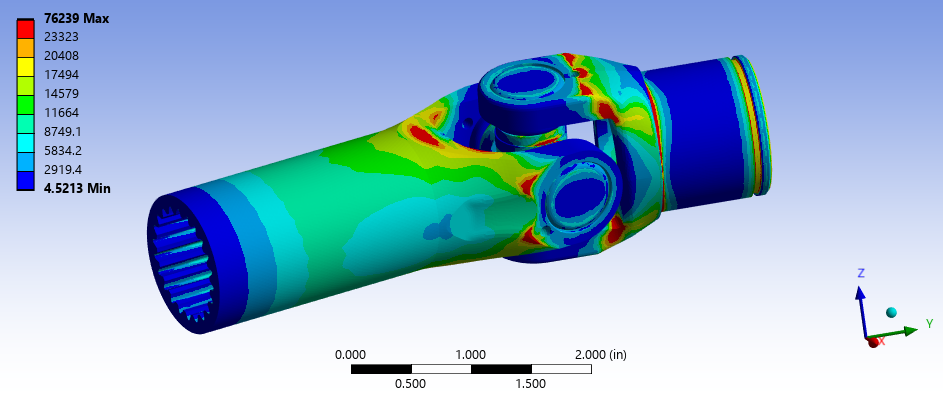
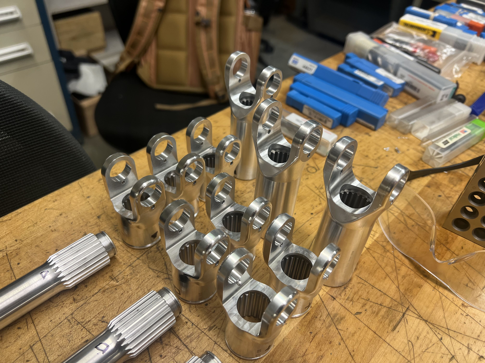
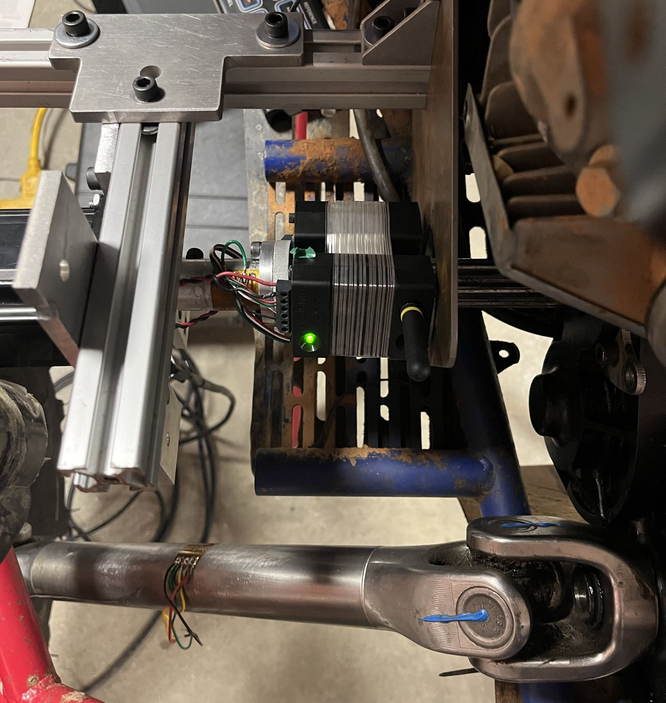
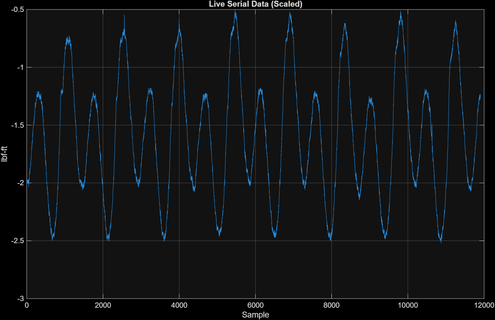
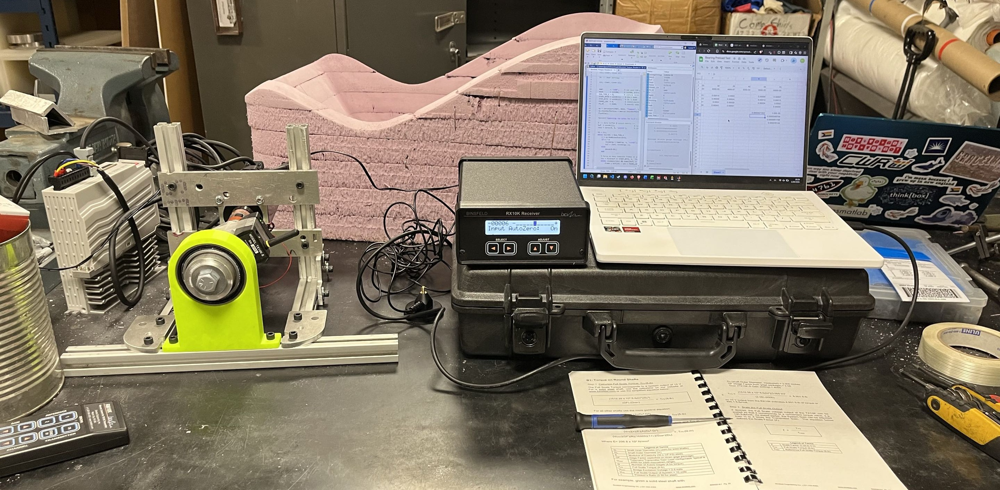

CWRU Motorposts
June 2023 to present
DESCRIPTION.... I am a member of my university's SAE Baja team. On this team I have a multitude of responsibilities. I am part of the manufacturing, test engineering and drivetrain team. Some of the tasks I have been responsible for are designing drivetrain components, like U-joints, as well as validating the designs with FEA. I have also designed and built some testing machines, like a bearing preload torque tester and a drivetrain efficency test. Finally, I have manufactured multiple parts on a Bridgeport style mill, waterjet and lathe for use on the competition vehicle. On this page I have highlighted some of the best projects I have completed.
More information on the team can be found here: cwrumotorsports.com

U-JOINTS.... A change in the rules for the 2024 SAE baja season heavily favored the use of a prop shaft over the previously used chain drive to enable 4 wheel drive. Our team made the switch, so we needed to design a new 4wd system, including U-joints to route the shaft around and under the driver. The u-joints were designed to handle the torque out of the gearbox, which is calculated to be 1125 lbf-in at the maximum. The ideal design would have a factor of safety of 1.5, while reducing the weight as much as possible. The critical areas for weight reduction were the ears of the u-joint, as the material farther away from the axis of rotation increases the moment of inertia by the square of the distance, which will reduce acceleration. The material chosen was 6061 T6 aluminum for both its strength, density and machineability. The machining was also a concern for this design as the team manufactured all the u-joints, limiting the design and material choice.
 |
 |
U-joint FEA Analysis |
CNC machined U-joints |
A static finite element analysis was conducted on the optimized yoke geometry using the design torque load applied as a distributed pressure on the spline surfaces of one yoke with the other yoke fixed to resemble the worst case acceleration It would experience. The FEA results confirmed the initial validity of the reduced weight design, having a minimum FOS a little over 1.55. SAE Baja competition involves approximately 4 hours of total on-course driving across endurance, hill climb, and rock crawl events. While the absolute cycle count is low compared to production vehicle standards, the stress amplitude is high and the stress ratio (R) approaches -1 in some loading scenarios as the joint rotates and each yoke ear alternates between tension and compression loading within a single revolution. The angle of the U-joint was fixed so a finite element analysis on the fatigue was also run on the sinusoidal loading of the maximum torque. This confirmed that the design should be able to handle one competitions worth of use.
DRIVETRAIN EFFICENCY TEST.... During the design and validation phase of the SAE Baja vehicle, I designed and built a drivetrain efficiency test to quantify the power losses occurring between the engine output and the driven wheels. By back-driving individual components including the CVT, gearbox, 4WD clutch, axle bearings, and U-joints and measuring the resistive torque required to rotate each assembly at representative speeds, a loss budget can be built up for the entire drivetrain. This data goes directly into both the design presentations at competition as well as the designes for the next years vehicle.
How the system works is a rosette strain gauge is used to measure the torsional stress on a precision shaft of Aluminum 7075. This precision shaft is attached to the gearbox input shafts spline, letting it drive everything else in the drivetrain to the wheel, or attached on the gearbox output spline to drive the drivetrain in reverse to measure the CVT. The system is attached with a mounting plate and some 8020-aluminum extrusion to allow it to be used on multiple different Baja cars, allowing the same setup to hopefully prove useful for multiple vehicles to come. As the system attaches to the gearbox, anything downstream from the gearbox output can be attached or removed to create a table of all the individual components parasitic torque loss with some easy algebra. The system is driven by a servo motor, so a large range of speeds are also available to test at and see how rpm affects the torque loss.

This photo of the strain gauge attached to the precision shaft with the Wheatstone bridge and radio transmitter shows the working principal of this system. Measuring torque loss in a dynamic system is significantly more complex than static resistance. A dynamic measurement requires simultaneous capture of input torque and rotational speed in real time, since the torque losses themselves change as a function of RPM, acceleration rate, and instantaneous load. This demands a synchronized torque transducer and tachometer setup capable of resolving signals at the frequencies of interest, and this is where the difficulty compounds. This test uses the ability of the servo motor hold at a constant speed, meaning that the system is in a “static” load. Even though it is rotating, there is no angular acceleration, and according to Newton's second law the net force must be zero. If we can read the torsion on the precision shaft from the servo motor and resistive torque of the system, we can determine the torque loss of the system at that rotational velocity. This system only requires a single rosette strain gauge and a constant rotation speed.
 |
 |
Drivetrain Efficency Test Run |
Plotted Data with Sinosoidal Response |
Crash Simulation.... I conducted a crash simulation using LS-Dyna, an explicit solver to see the impact on the frame at different speeds. Although this does not change the material or stock dimensions, as these are chosen based on SAE rules, it was interesting to see the worse case scenario. In this simulation the frame is impacting a completely rigid wall at 40 miles per hour. This is the worst-case scenario for the driver, as all the energy of the crash goes into the frame, and not the object they crashed into or any other part of the car. This is highly unlikely to occur, but it does show the energy absorption and impact displacement of the frame.

BEARING PRELOAD TEST.... The bearing preload test was a test run to find the torque loss over different bearing preloads for our main wheel bearings. This served to both get information about a new bearing we chose to use for the car, as well as serve as a testing ground for the system that would go into the drivetrain efficiency test. This test helped me set up both the strain gauge system and the MATLAB code to evaluate the data. It also revealed some possible issues, like the need for some mechanical coupler to avoid all bending moments caused by imperfect concentric alignment of the system.

Last Updated:
End of Page